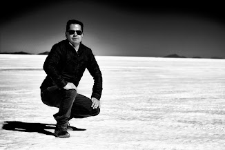

Creador Digital · Estudiante de Programación
Soy un apasionado por la tecnología y la creación visual. Actualmente estoy estudiando los fundamentos de Python y Machine Learning. Combino este aprendizaje técnico con mi experiencia trabajando con herramientas de manipulación de imágenes como Adobe Photoshop y edición de video, buscando siempre crear proyectos innovadores.